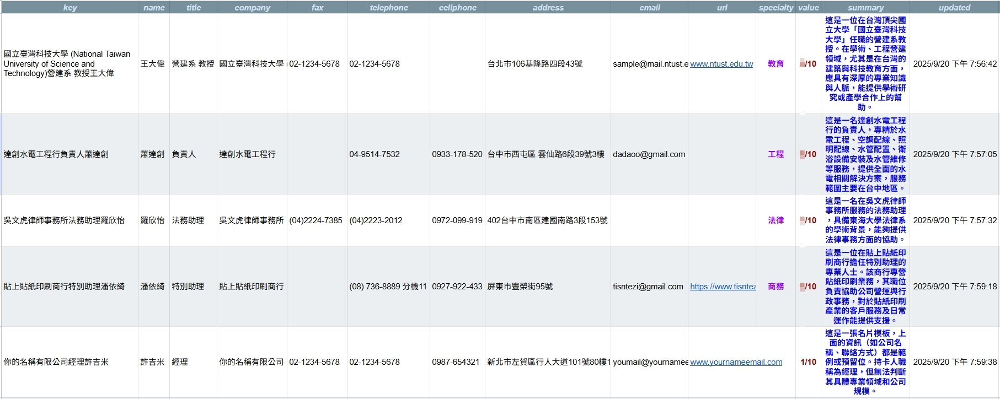

你的名片夾，是資產還是負擔？
我如何透過LINE和AI，將傳統名片管理轉變為一個拍照即建檔、開口就能搜的智慧人脈庫，將每張名片處理時間從5分鐘縮短至5秒。
The Challenge: 被遺忘的人脈資產
在社交場合中，我們交換了無數名片，但它們的終點往往是抽屜的角落。手動輸入耗時且枯燥，導致寶貴的人脈資訊變成無法利用的「死資料」。
繁瑣的手動輸入
將一張名片的資訊輸入手機或電腦，平均耗時3-5分鐘，過程枯燥且容易出錯。
資訊孤島
紙本名片和數位聯絡人分散各處，難以統一管理和搜尋，無法形成有效的人脈網絡。
價值遺忘
幾個月後，我們可能只記得一個名字，卻忘了對方的專業背景和潛在合作機會。
The Solution: 會思考的LINE人脈管家
我打造了一個住在LINE裡的「人脈管家」。它不僅能處理名片，更能理解你的需求，讓管理人脈就像聊天一樣簡單自然。
1. 拍照即建檔
只需將名片拍照傳給LINE機器人，剩下的交給它。

2. AI分析與洞察
AI不僅提取基本資料，更會生成背景摘要和潛力評分，幫你記住每個人的價值。
3. 雲端自動歸檔
結構化資料存入Google Sheets，名片圖片備份至Google Drive，資料安全且易於管理。

4. 開口就能搜
直接在LINE用自然語言提問（例如「幫我找上次遇到的那位行銷經理」），AI助理立刻幫你找到人。

The Impact: 將人脈轉化為即戰力
這個系統讓「人脈管理」不再是一件苦差事，而是真正能創造價值的商業活動。
效率革命
x60
將每張名片的處理時間從 5 分鐘縮短至 5 秒，效率提升 60 倍，讓你專注於建立關係，而非文書處理。
人脈活化
AI
AI摘要與評分功能，將靜態資訊轉化為動態洞察，讓你隨時掌握每位聯絡人的核心價值。
即時存取
LINE
在最熟悉的通訊軟體中，隨時隨地查詢、管理人脈，讓你的專業網絡成為真正的隨身智囊。
核心做法
- LINE Bot 接收圖片: 使用者傳送名片照片至 LINE Bot，n8n 的 Webhook 節點接收圖片二進制資料。
- AI 智慧辨識與分析: 整合 Google Gemini Pro Vision 模型，能精準地辨識圖片中的文字，並根據 Prompt 指令提取名片上的姓名、職稱、公司等資訊，更能扮演專業秘書，為聯絡人進行潛在價值評分並生成專業背景摘要。
- 雲端建檔與備份: n8n 工作流自動將結構化資料存入 Google Sheets，同時將原始名片圖檔以「公司＋職稱＋姓名」的格式命名，備份至 Google Drive 指定資料夾。
- 自然語言搜尋: 串接 AI Agent，讓使用者可直接在 LINE 中下達自然語言指令（如：「幫我找做水電的人」），AI 即會自動搜尋 Google Sheets 並回傳格式化結果。